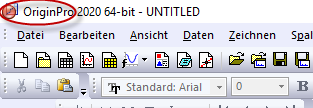
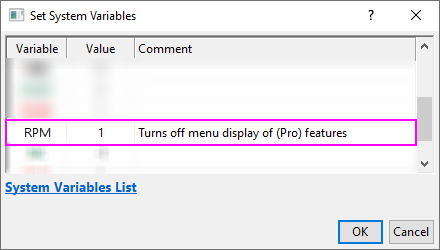

OriginPro
OriginPro
OriginPro, Funktionen
OriginPro, die professionelle Version der Software Origin, bietet alle Funktionen von Origin plus zusätzliche Analysehilfsmittel und -funktionalitäten. Wenn Sie nicht wissen, welches Produkt Sie besitzen -- Origin oder OriginPro --, sehen Sie einfach in der Titelleiste Ihrer Software nach.
- 
 | Anwender der Standardversion von Origin werden bemerken, dass einige Menübefehle mit (Pro) gekennzeichnet sind. Dies ist ein Hinweis darauf, dass die Funktion nur in OriginPro verfügbar ist. Falls Sie im Besitz der Standardversion von Origin sind, aber der Meinung sind, dass Sie Funktionen von OriginPro brauchen, können Sie ein Upgrade durchführen. Dazu wenden Sie sich an Ihren Origin-Vertragshändler. Falls Sie weiterhin die Standardversion von Origin verwenden möchten, ohne die Menübefehle von (Pro) angezeigt zu bekommen, klicken Sie auf Einstellungen: Systemvariablen und geben Sie Folgendes im Dialog Systemvariablen festlegen ein und klicken Sie auf OK (Kommentar ist optional):
- 
|
Kurvenanpassung
Orthogonale Regression Zusätzlich zu Origins Optionen der linearen und nichtlinearen Kurvenanpassung, unterstützt OriginPro Folgendes:
- Lineare Anpassung mit X-Fehler
- Nichtlineare Anpassung mit X- und Y-Fehlern (Orthogonale Regression)
- Anpassung mit impliziten Funktionen (Orthogonale Distanzregression)
- Anpassungsvergleich: Alle Funktionen in einer Kategorie anpassen und in eine Reihenfolge bringen, zwei Modelle mit einem Datensatz oder zwei Datensätze mit einem Modell vergleichen
- Globale Anpassung von mehrere Kurven mit Hilfe von verschiedenen Funktionen mit der Option der gemeinsamen Nutzung von Parametern
Weitere Informationen finden Sie auf diesen Webseiten: Lineare und polynomielle Anpassung und Nichtlineare Anpassung.
Oberflächenanpassung
Oberflächenanpassung, 3D 3D-Oberflächenanpassung Mit OriginPro können Sie eine 3D-Oberflächenanpassung durchführen. Wählen Sie aus 21 Standardmodellen zur Oberflächenanpassung, einschließlich Gauss2D, DoseResponse2D, Exponential2D, und Polynomial2D, oder definieren Sie Ihre eigene Funktion.
- Passen Sie Arbeitsblattdaten (XYZ) oder Matrixdaten (Z-Werte) an.
- Suchen und passen Sie mehrere Peaks mit Hilfe von einer aus mehreren Methoden zur Peakidentifikation an.
- Sie können Peakparameter automatisch initialisieren.
- Sie haben die Möglichkeit, Nebenbedingungen und Grenzen auf Parameter anzuwenden und Parameterwerte festzulegen.
- Geben Sie Parameter und Statistikergebnisse plus Residuenkurve aus.
- Suchen Sie spezifische Z-Werte entlang der Anpassungsoberfläche und schließen Sie sie in Ihre Ausgabe mit ein.
- Es gibt eine Option für die automatische Neuberechnung der Ergebnisse und die Speicherung von Hilfsmitteleinstellungen in einer Designdatei zur wiederholten Nutzung.
Weitere Informationen finden Sie auf dieser Webseite: Oberflächenanpassung.
Peaks anpassen
Peakanalyse OriginPro enthält das Hilfsmittel Peaks analysieren, das Folgendes unterstützt:
- Peaks suchen (Lokales Maximum, Fenstersuche, 1. Ableitung, 2. Ableitung, Residuen nach 1. Ableitung)
- Basislinie erkennen und subtrahieren (Konstante, Datensatz, XPS, gewichtete Endpunkte, Gerade Linie, Benutzerdefiniert, Keine).
- Peaks mit benutzerdefinierten oder Standardfunktionen anpassen
- Einzelne Peaks mit verschiedenen Anpassungsfunktionen anpassen
- Basislinie als Teil des Peakanpassungsprozesses anpassen (benutzerdefinierte oder Standardfunktionen)
- Anpassungsparameter festlegen (Fest, Teilen, Grenzen setzen)
Weitere Informationen finden Sie auf dieser Webseite: Peaks anpassen.
Statistik
Statistik OriginPro unterstützt erweiterte statistische Analysen in diesen Bereichen: Multivariate Analyse Statistik, Multivariate
- Deskriptive Statistik (Kreuztabelle, Verteilungsanpassung, Korrelationskoeffizient, Partieller Korrelationskoeffizient)
- ANOVA (Einfach/Zweifach mit wiederholten Messungen, Dreifach)
- Multivariate Analyse (Hauptkomponenten, Cluster, Diskriminanz-/Kanonische Diskriminanzanalyse, Partielle kleinste Quadrate)
- Lebensdaueranalyse (Kaplan-Meier, Proportionales Hazardmodell nach Cox, Weibull-Fit, Test auf Gleichheit der Lebensdauerfunktionen)
- Parametrische Hypothesentests (t-Test auf Zeilen bei zwei/verbundenen Stichproben, Test auf Varianzen bei ein/zwei Stichproben, Test von Anteilen bei ein/zwei Stichproben)
- Nicht-parametrische Tests (Wilcoxon-Rangtest mit Vorzeichen bei einer/verbundenen Stichproben, Vorzeichentest bei verbundenen Stichproben, Mann-Whitney-Test, Kolmogorov-Smirnov-Test bei zwei Stichproben, Kruskal-Wallis-ANOVA, Moods Mediantest, Friedman-ANOVA, Unterstützung für simultane Tests)
- Trennschärfe und Stichprobenumfang (t-Test bei einer/zwei/verbundenen Stichproben, Test von Anteilen bei einer/zwei Stichproben, Test auf Varianzen bei einer/zwei Stichproben, einfache ANOVA)
- Analyse der ROC-Kurve
Weitere Informationen finden Sie auf dieser Webseite: Statistik.
Signalverarbeitung
Signalverarbeitung Zusätzlich zu Origins Standardhilfsmitteln für die Signalverarbeitung sind folgende Optionen in OriginPro verfügbar:
- Signaltransformationen (Kurzzeit-Fourier-Analyse, Hilbert-Transformation, 2D-FFT/2D-IFFT)
- Filterung (IIR-Filter-Design, 2D-FFT-Filter)
- Korrelation (2D-Korrelation)
- Wavelet-Analyse (kontinuierliche Wavelet-Transformation, diskrete Wavelet-Transformation, inverse diskrete Wavelet-Transformation, mehrstufige Wavelet-Zerlegung, Glättung, Rauschentfernung, 2D-Wavelet-Zerlegung, 2D-Wavelet-Rekonstruktion)
- Minitool Flankenanalyse (Lineare Suche, Histogramm, Größte Dreieck)
- Dezimierung (Gleitender Durchschnitt, Filter mit endlicher Impulsantwort)
- Kohärenz
- Umhüllungskurven (oben und/oder unten, Glättung während der Umhüllungserkennung)
Weitere Informationen finden Sie auf dieser Webseite: Signalverarbeitung.
Minitools
Minitools Mit Origin-Minitools können untersuchende Analysen für gezeichnete Daten in einem Diagramm schnell und einfach durchgeführt werden. Auch wenn es für jede Analyse ein spezifisches Minitool gibt, ist ihnen allen gemeinsam, dass der Anwender interaktiv eine grafische Datenauswahl, das so genannte ROI-Objekt (Region of Interest), um die zu analysierenden Daten positioniert. OriginPro umfasst diese zusätzliche Minitools:
- Minitool Cluster (Statistik zu Punkten innerhalb/außerhalb des ROI-Objekts; Unterstützung für Maskierung, Bearbeitung, Kopieren und Löschen von Punkten)
- Minitool 2D-Integration (Integration auf Bild- oder Konturdiagrammen aus Matrix- oder Arbeitsblattdaten)
- Minitool Flankenanalyse (Analysieren der Anstiegs-/Abfallszeiten von Stufensignalen)
Weitere Informationen finden Sie auf dieser Webseite: Untersuchende Analyse.
Bildverarbeitung
Bildverarbeitung Origin und OriginPro enthalten eine Sammlung von einfach zu bedienenden Hilfsmitteln für die Bildverarbeitung. OriginPro verfügt über zusätzliche Hilfsmittel für die folgenden Bereiche:
- Bildanpassungen (Lookup-Tabelle der Funktionen, Autolevel)
- Bildkonvertierung (Dynamisch Binär, Schwellenwert, RGB Mischen/Aufteilen, Bildskala)
- Räumliche Filter (Anwenderfilter)
- Arithmetische Transformationen (Alpha-Mischung, Extrahieren nach XYZ, Einfache Mathematik, Mathematische Funktionen, morphologischer Filter, Pixellogik, Hintergrund ersetzen, Hintergrund subtrahieren, interpolierten Hintergrund subtrahieren)
Weitere Informationen finden Sie auf dieser Webseite: Bildverarbeitung.
Apps
Viele Add-on-Apps sind kodiert, um sie in eine OriginPro-Funktion zu integrieren. Daher erfordern Sie eine OriginPro-Lizenz, um ausgeführt werden zu können. Diese Apps werden auf der Seite Dateiaustausch von Origin mit einem roten  -Symbol gekennzeichnet.
-Symbol gekennzeichnet.
Im Folgenden sind einige der beliebtesten OriginPro-Apps aufgeführt:
Allgemeine Informationen zu Apps finden Sie unter www.originlab.com/apps.